Productgegevens van de fabrikant · Keytracker Ltd
KeyTracker
Mechanisch sleutel- en materieelbeheer, zonder stroom

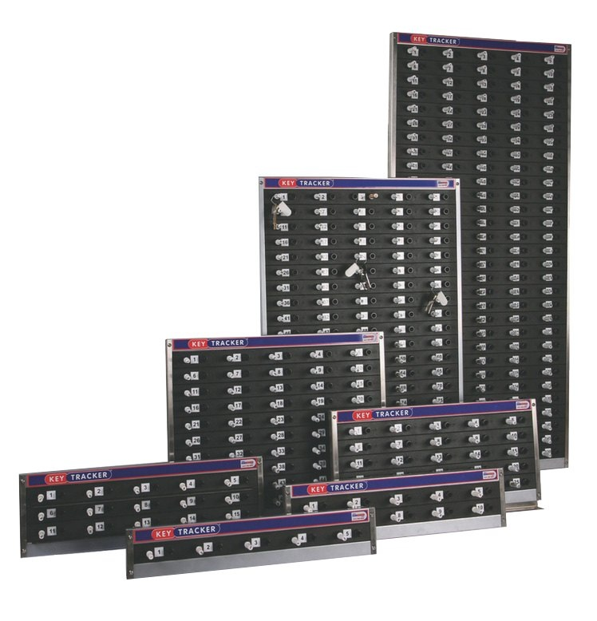
Waarom KeyTracker?
Keytracker levert sinds 1996 oplossingen voor veilig sleutelbeheer. Het oorspronkelijke mechanische bord met "pin erin, pin eruit" biedt een snelle en eenvoudige manier om grote aantallen regelmatig gebruikte sleutels en materieel op te bergen, te volgen en te beveiligen. In de loop der jaren is het mechanische systeem aangepast aan de uiteenlopende eisen uit verschillende sectoren.
Een KeyTracker-systeem geeft u een efficiënte beheersing waarmee u kunt doen waar u goed in bent, zonder de onderbreking en de kosten van kwijtgeraakte of verkeerd gelegde sleutels en apparatuur.
Wat het systeem oplevert
- Volledige, onfeilbare ordening van alle sleutels en materieel.
- Meer beveiliging via het KeyTracker-systeem met securityseals en een optionele zelfsluitende stalen kast met drukknop.
- Gelegenheidsdiefstal uitgesloten: sleutels zitten aan elkaar en aan het bord vast.
- Minder gerichte diefstal, door de kast, het systeem en de securityseals.
- Sleutels sneller vinden: genummerde panden, voertuigen of sloten met bijbehorende genummerde borden, en gebruikerspinnen met initialen en kleur.
Waarom klanten voor Keytracker kiezen
- Het grootste assortiment sleutel- en materieelbeheer ter wereld.
- Verzending dezelfde dag, wereldwijd.
- Gratis proefopstellingen beschikbaar; ook huuropties.
- Alle producten samengesteld of gemaakt in het Verenigd Koninkrijk.
- Voorkeursleverancier van veel grote merken.
- ISO 9001:2008 en IIP geaccrediteerd; eigen accountmanager per klant.
- Systeem in overleg samengesteld, op maat van uw eisen.
KeyTracker · Mechanisch pinsysteem
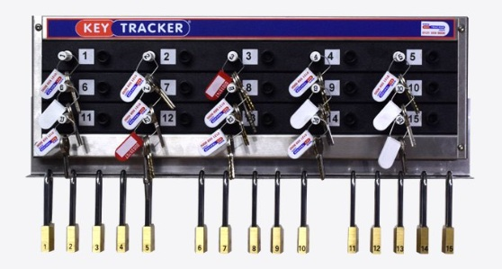
Bord met genummerde posities
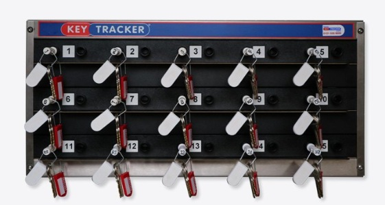
Sleutelbossen aan sleutelpinnen
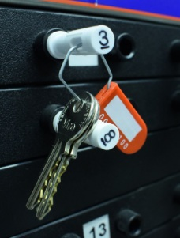
Verzegelde bos op zijn positie
Het mechanische pinsysteem van KeyTracker is een eenvoudig bord met "pin erin, pin eruit". Sleutels of materieel worden met een securityseal vastgezet aan een genummerde sleutelpin. Het bijbehorende nummer staat op de papieren, in het voertuig of bij het slot, zodat de juiste sleutels of apparatuur snel te vinden zijn. Bevoegde medewerkers ontgrendelen de gewenste sleutelbos met hun eigen gebruikerspin. Die pin is er in vijftien kleuren en laat direct zien welke afdeling de sleutels heeft; meestal is de pin gegraveerd met initialen of een toegekend nummer. Medewerkers die meer dan één set sleutels of materieel tegelijk meenemen, kunnen meerdere pinnen krijgen.
Bij terugkomst gaat de sleutelbos terug naar de bijbehorende genummerde positie op het bord en vergrendelt de medewerker de bos weer, waarmee tegelijk zijn gebruikerspin vrijkomt voor de volgende keer. Op elk moment laat het bord precies zien wie welke sleutels of apparatuur heeft.
Sleutels pakken in drie stappen
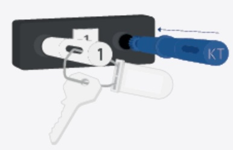
Plaats uw persoonlijke gebruikerspin met initialen en kleurcode.
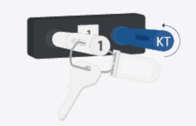
Draai linksom om de gewenste sleutelbos vrij te geven.
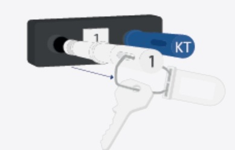
Neem de sleutelpin met de sleutels eraan uit het bord.
KeyTracker · Maten en systeemvarianten
Aantallen en maten
Door de modulaire opzet kan het bord worden gebouwd voor elk aantal sleutels. Een stalen frame houdt de strips vast, elk met vijf posities. Blanco tussenstrips zijn leverbaar voor grote sleutelbossen, zodat alle sleutels altijd op hun juiste positie liggen en in één oogopslag te herkennen zijn.
| Framemaat | h × b × d | Gewicht | Capaciteit |
|---|---|---|---|
| T1 | 4 × 15 × 7 cm | 0,09 kg | 1 |
| M5/G | 10 × 55 × 10 cm | 1,36 kg | 5 |
| M10/G | 14 × 55 × 10 cm | 1,72 kg | 10 |
| M15/G | 18 × 55 × 10 cm | 1,87 kg | 15 |
| M25/G | 26 × 55 × 10 cm | 3,63 kg | 25 |
| M50/G | 44 × 55 × 10 cm | 5,44 kg | 50 |
| M100/G | 82 × 55 × 10 cm | 11,34 kg | 100 |
| M150/G | 121 × 55 × 10 cm | 14,52 kg | 150 |
Systeemvarianten
Het systeem kan worden gecombineerd met andere KeyTracker-producten tot een compleet beheer.
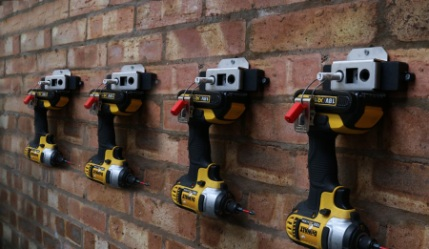
Locktracker
Een opbergbalk voor hangsloten. Nummer de hangsloten gelijk aan hun sleutels en het is direct duidelijk — aan kleur en initialen van de gebruikerspin — welke afdeling of persoon aan welke machine werkt. Beter voor veiligheid, minder discussie over verantwoordelijkheid en hangsloten die altijd terugkomen.
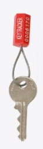
Key Holding
Voor zelden gebruikte sleutels: met de Key-Holding-balken werkt u met extra zegels die moeten worden verwijderd, vastgelegd en vervangen. Zo is aantoonbaar of sleutels wel of niet zijn gebruikt bij een incident. Ook te gebruiken met de KeyTracker-software voor volledige controlesporen en rapporten.
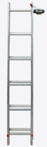
Tool tracker
Zorgt dat gereedschap, ladders en apparatuur altijd worden teruggebracht.
KeyTracker · Materieel en handelaarsplaten
Het mechanische KeyTracker-systeem met vijf posities of de losse T1-unit is de oplossing om gereedschap, apparatuur en handelaarsplaten op te bergen, te beveiligen en te volgen. De securityseals of kabelzegels zorgen dat medewerkers hun naam aan de apparatuur verbinden door hun gebruikerspin achter te laten. In één oogopslag zien leiding en medewerkers welke apparatuur in gebruik is en door wie, terwijl een snelle teruggave verzekerd blijft.
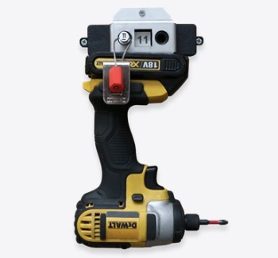
T/1
Voor het volgen van één set sleutels, gereedschap of apparatuur.
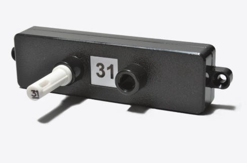
T/1c
Metalen pin voor extra duurzaamheid bij zwaar of omvangrijk materieel, zoals ladders of steekwagens.
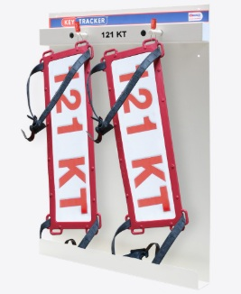
Handelaarsplaten
Handelaarskentekens opgeborgen, beveiligd en per gebruiker herleidbaar.
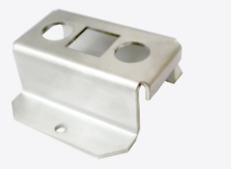
Beugels en houders
Stalen houders om apparatuur op de juiste plek vast te zetten.
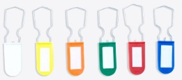
Sleutellabels
Beschrijfbare labels in zes kleuren om bossen per afdeling te scheiden.
KeyTracker · Pinnen en artikelnummers
Vijf uitvoeringen
De brochure onderscheidt vijf uitvoeringen pinnen. Kunststof pinnen zijn er in de uitvoeringen Management (M) en Standaard (S); de toevoeging achter het artikelnummer bepaalt welke.
| Uitvoering | Omschrijving | |
|---|---|---|
| Metalen sleutelpin | In metaal, ook leverbaar voor zwaar materieel. | |
| Sleutelpin | Standaard (S). Afgerond uiteinde, houdt de sleutels vast. | |
| Vlakke toegangspin | Management (M) of Standaard (S). Tandwieluiteinde. | |
| Toegangspin met verdikte tip | Management (M) of Standaard (S). Verlengde tip. | |
| Metaaldetecteerbare toegangspin | Voor levensmiddelenbedrijven, alleen in lichtblauw. |
Sleutelpinnen
Versterkte kunststof pinnen met een afgerond uiteinde, die de sleutels vasthouden in het mechanische of het KT Smart-systeem. Sleutels of materieel worden met securityseals of kabelzegels aan de pin vastgezet. Alle pinnen zijn genummerd, passend bij hun positie op het bord. Negen kleuren, uitvoering Standaard (S).
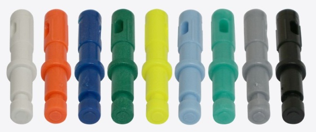
A03/S · A08/S · A06D/S · A05/S · A01/S · A06L/S · A09/S · A10/S · A29/S
KeyTracker · Artikelnummers pinnen
Toegangspinnen
Versterkte kunststof pinnen met een tandwieluiteinde om de sleutelpin vrij te geven, met gravering voor maximaal drie letters of cijfers. Leverbaar in vijftien kleuren: de kleur laat zien welke afdeling de sleutels heeft, de gravering welke medewerker. Onder elke pin staat het basisartikelnummer.
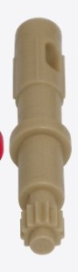
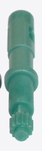
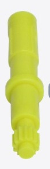
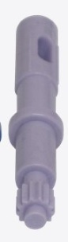
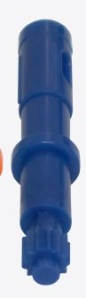
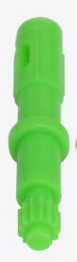
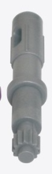
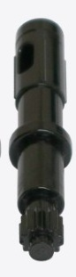
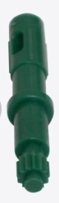
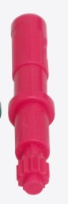
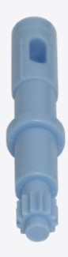
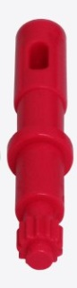
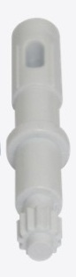
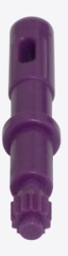
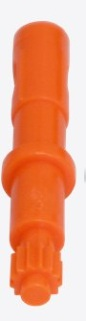
Artikelnummers per kleur
Per kleur staan hieronder de vier uitvoeringen. Een streepje betekent dat die uitvoering in de brochure niet in die kleur staat.
| Kleur | Vlak (S) | Vlak (M) | Verdikte tip (S) | Verdikte tip (M) |
|---|---|---|---|---|
| A23 | A23/S | — | A23/N | — |
| A21 | A21/S | A21/C | A21/N | A21/M |
| A20 | A20/S | A20/C | A20/N | A20/M |
| A14 | A14/S | A14/C | A14/N | A14/M |
| A15 | A15/S | A15/C | A15/N | A15/M |
| A16 | A16/S | A16/C | A16/N | A16/M |
| A18L | A18L/S | A18L/C | A18L/N | A18L/M |
| A28 | A28/S | A28/C | A28/N | A28/M |
| A26 | A26/S | A26/C | A26/N | A26/M |
| A27 | A27/S | A27/C | A27/N | A27/M |
| A22 | A22/S | A22/C | A22/N | A22/M |
| A24 | A24/S | A24/C | A17/N | A24/M |
| A18D | A18D/S | — | A18D/N | — |
| A19 | A19/S | A19/C | A19/N | A19/M |
| A13 | A13/S | A13/C | A13/N | A13/M |
Onder voorbehoud van wijzigingen.